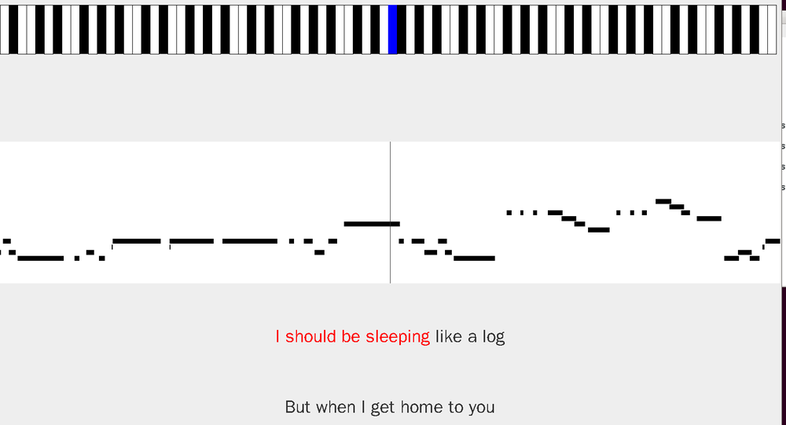
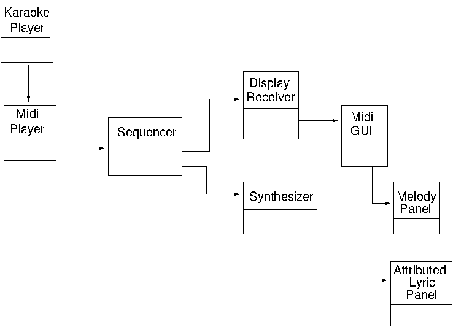

JavaSound has no direct support for Karaoke. This chapter looks at how to combine the JavaSound libraries with other libraries such as Swing to give a Karaoke player for MIDI files.
Java has no library support for Karaoke. That is too application specific. In this chapter we give code for a Karaoke player that can play KAR files. The player will show two lines of the lyrics to be played, with words already played beigin highlighted in red. Along the top it shows using a simple piano keyboard the notes that are played in channel one of the MIDI file. In the middle it shows the melody line, with a vertical line in the middle to show the currently playing note.
The player looks like

The UML diagram is basically

The KaraokePlayer class extracts the filename of the Karaoke file and creates a MidiPlayer to handle the file:
The MidiPlayer creates a Sequence from the file. Sequence information is required at many places, and so rather than pass the sequence in parameters, it is stored in a singleton (static) object, a SequenceInformation. This makes the sequence effectively a global object to the system.
The player then gets the default sequencer and transmits MIDI events to two Receiver objects: the default synthesizer to play the events and a DisplayReceiver to manage all the GUI handling. The Sequencer method getTransmitter() is mis-named: each time it is called it returns a new transmitter, each playing the same events to their respective receivers. From Java SE Documentation: Chapter 10: Transmitting and Receiving MIDI Messages
This code [in their example] introduces a dual invocation of the MidiDevice.getTransmitter method, assigning the results to inPortTrans1 and inPortTrans2. As mentioned earlier, a device can own multiple transmitters and receivers. Each time MidiDevice.getTransmitter() is invoked for a given device, another transmitter is returned, until no more are available, at which time an exception will be thrown.
That way, the sequencer can send to two receivers.
Receivers do not get MetaMessages. These contain information such as Text or Lyric events. The DisplayReceiver is registered as an MetaEventListener so that it can manage these events as well as other events.
The MidiPlayer is:
The DisplayReceiver collects both ShortMessages as a Receiver and MetaMessages as a MetaEventListener. These are needed to see both the notes and the lyrics.
The DisplayReceiver decodes the notes and text sent to it. In turn, it passes these to a MidiGUI to show them. This class is
The MidiGUI is called by two methods: setLyric() and setNote(). The GUI consists of three main areas: an area to give a "piano" view of the melody as it is played (pianoPanel), an area to show the complete set of melody notes (melodyPanel) and a set of Panels to show the lyrics. setNote() is fairly straightforward in that it just calls drawNote() in the pianoPanel. setLyric() is considerably more complex.
Most Karaoke players show a couple of lines of text for the lyrics. As lyrics are played, typically the text will change colour to match. When the end of a line is reached, focus will switch to the next line, and the previous line will be replaced with another line of lyrics.
Each line must hold a line of lyrics. The line must be able to react to lyrics as they are played. This is handled by an AttributedTextPanel, shown later. The main task is to feed changes in lyrics through to the selected panel so that it can display them in the correct colours.
The other principal task for the MidiGUI here is to switch focus between AttributedTextPanel's when end of line is detected and to update the next line of text. The new lines of text can't come from the lyrics as they are played, but must instead be constructed from the sequence containing all of the notes and lyrics. The convenience class SequenceInformation (shown later) takes a Sequence object and has a method to extract an array of LyricLine objects. Each panel displaying a line is given a line from this array.
The panel to display a line of lyrics must be able to show text in two colours: the lyrics already played and the lyrics yet to be played. The Java AttributedText class is useful for this, as the text can be marked with different attributes such as colours. This is wrapped in an AttributedTextPanel, shown later.
One minor wrinkle concerns language. Chinese has both the character form and a Romanised form called PinYin. Chinese speakers can read the character form. People like me can only understand the PinYin form. So if the language is Chinese then the AttributedTextPanel shows the PinYin alongside the Chinese characters. The language identity should be passed to the AttributedLyricPanel as well.
The AttributedLyricPanel is
The pianoPanel shows a piano-like keyboard. As a note is turned on, it colours the note in blue and returns to normal any previously playing note. When a note is turned off, the note reverts to its normal colour (black or white).
Colouring notes is called by setNote as nonte on/note off messsages come from the sequencer.
The PianoPanel is
The MelodyPanel is a scrolling panel showing all the notes of the melody. The currently playing note is centred in the display. This is done by drawing all of the notes into a BufferedImage and then copying across the relevant part every 50 milliseconds.
The MelodyPanel is
SequenceInformation is given by
For Chinese language files, one of my aims was to display the PinYin (Romanised form) of the Chinese hierographic characters. For this, I need to be able rewrite any sequence of Chinese characters into their PinYin form. I couldn't find a list of characters and their corresponding characters. The closest is the Chinese-English Dictionary from which you can download the dictionary as a text file. Typical lines in this file are
不賴 不赖 [bu4 lai4] /not bad/good/fine/
Each line has the Traditional characters followed by the Simplified characters, the PinYin in [...] and then English meanings.
I used the following shell script to make a list of character/PinYin pairs:
#!/bin/bash
# get pairs of character + pinyin by throwing away other stuff in the dictionary
awk '{print $2, $3}' cedict_ts.u8 | grep -v '[A-Z]' |
grep -v '^.[^ ]' | sed -e 's/\[//' -e 's/\]//' -e 's/[0-9]$//' |
sort | uniq -w 1 > pinyinmap.txt
to give lines such as
好 hao
妁 shuo
如 ru
妃 fei
This can then be read into a Java Map, and then quick lookups can be done to translate Chinese to PinYin.
The Karaoke player described so far is functionally equivalent to kmidi and pykar. It plays KAR files, shows the notes and scrolls through the lyrics. To sing along with it, you need to use an ALSA or PulseAudio player.
But Java can also play sampled sounds, as discussed in an earlier chapter. So that code can be brought into the Karaoke player to give a more complete solution. For MIDI, Java normally gives only a Gervill synthesizer which is a software synthesizer that plays out through The PulseAudio default device. The actual output device is not accessible through Java, and is controlled by the underlying PulseAudio output device. But for sampled media, the input devices can be controlled. So in the following code a selection box allows choice of sampled input device, and leaves the output device to the default.
The code to play the sampled media is pretty much the same as we have seen before:
if the default devices are chosen, the input and output devices are the PulseAudio default devices. Normally these would both be the computer's sound card. However, the default devices can be changed using for example, the PulseAudio volume control. These can set either the input device, the output device or both. The dialogue can also be used to set the input device for sampled media.
This raises a number of possible scenarios:
Using different devices raises the problem of "clock drift", where the devices have different clocks which are not synchronised. The worst case seems to be the second one, where over a three minute song on my system I could hear a noticeable lag in playing the sampled audio, while the KAR file played happily. It also introduced a noticeable latency in playing the sampled audio.
The program top can give a good idea of how much CPU is used by
various processes. My current computer is a high-end Dell laptop with a
quad-core Intel i7-2760QM CPU running at 2.4GHz. According to
CPU Benchmarks
the processor is in the "High End CPU Chart."
On this computer, tested with various KAR files, PulseAudio takes about 30%
of the CPU while Java takes about 60%. On occassions these figures exceeded.
There is not much left for additional functionality!
In addition, while playing a MIDI file, sometimes the Java process hangs,
resuming with upto 600% CPU usage (I don't know how top
manages to record that)!. This makes it effectively unusable, and I am
not sure where the problem lies.
The Java source files are here and the Chinese lookup table is here
JavaSound has no direct support for Karaoke. This chapter has looked at how to combine the JavaSound libraries with other libraries such as Swing to give a Karaoke player for MIDI files. It requires a high-end computer to run these programs.